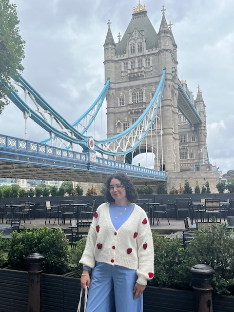

Welcome to my website!
I am currently a PhD at the University of Caen Normandy under the supervision of Martin Weimann and Denis Simon.
My interests lie in number theory and algebraic geometry, in particular, the algorithmic aspects that ensue from these subjects. My thesis project is about applications of the OM algorithm for computing bases of Riemann-Roch spaces.
Here is my CV.